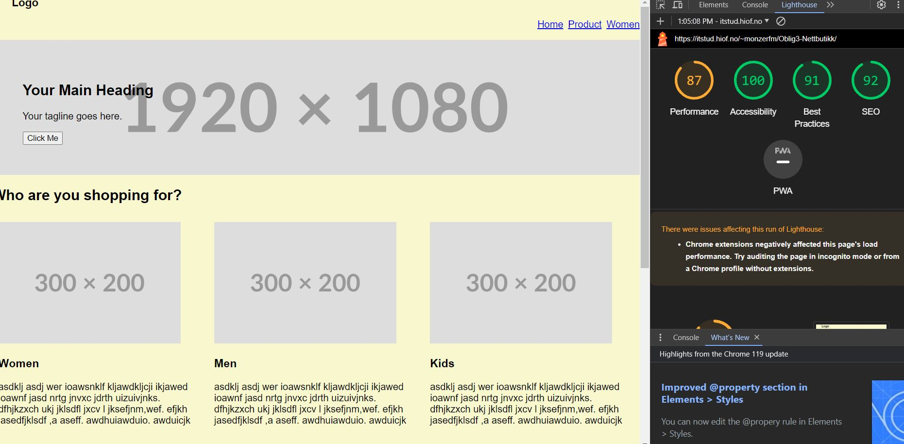
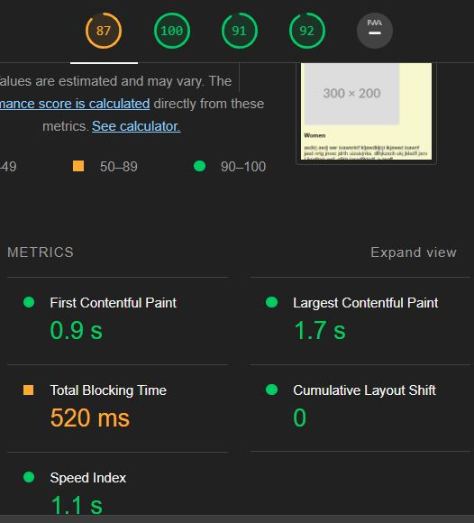
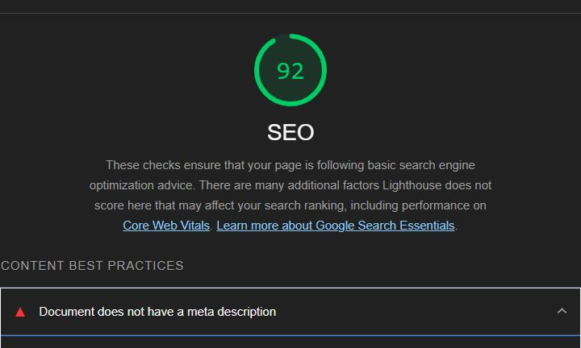
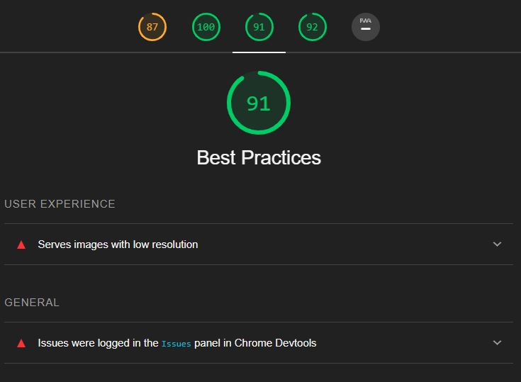

Analyse
Siden designet er mobile first og det er vanligvis slik at hvis alt funker på mobil, så funker det på desktop, velger jeg å kun kjøre lighthouse for mobil. I tillegg kjørte jeg analysen to ganger. Den første med mappen til Oblig 3, og den andre med Oblig 4. Den eneste forskjellen på tidspunktet testen ble kjørt var at jeg brukte ekte bilder. Dette er fordi jeg brukte kun placeholders i Oblig 4. Jeg synes at analysen ble unøyaktig på grunn av det.
Her er skjermbildene av analysen for de forskjellige sidene
   Dette var så og si de samme resultatene for hver side, uansett om jeg bytta bildene eller ikke. Derfor skal jeg ikke sette inn alle skjermbildene for å unngå gjentagelse og holde det lesbart. De ligger fortsatt i "img" mappen. Det virker hovedproblemet er at jeg ikke har “explicit width and height” tags på bildene: "Image elements do not have explicit width and height." Dette er bare fordi jeg kodet med mobile-first prinsippet og satte alle bildene til å ha width 100% med mindre de er på PC. I tillegg er de begrenset av forelderelementet deres også.
"Document does not have a meta description". Dette fikset jeg i oblig 4
"Serves images with low resolution": Dette er et valg jeg tok siden jeg mener at det ikke er nødvendig med høyere oppløsning for denne nettsiden. Hvis dette hadde vært for en ekte kunde derimot, hadde jeg lastet opp bilder med minst 72 Pixels per inch og minst 1000px på den lengste siden og maks 2MB filstørrelse for best ytelse og brukeopplevelse. Kilde: https://www.shopify.com/blog/image-sizes